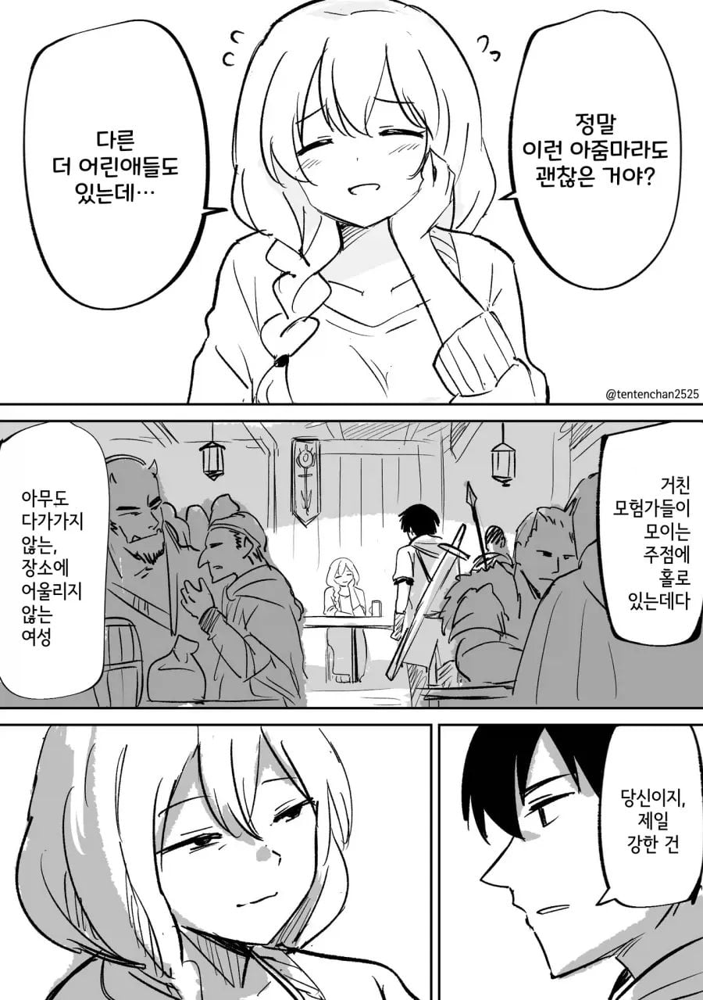

호오...이자식...
아주마니
아주머니 아주많이 사랑해요
사무라 이주머니 라고 합니다.
어어 눈 그렇게 뜨지마라
이래서 눈치빠른꼬맹이는 싫다니까
아아 좀 봐달라구. 이제 은퇴해서 그냥 아이나돌보면서 주점이나 굴리는게 내 낙이야. 은퇴한지 5년이나 지난 퇴물을 다시 현장으로 불러내봐야 뭘 하겠어? 난 그냥 아줌마로 살고싶어.
그거 미안하게됐군, 하지만 당신이 필요해. 북부대공의 후계문제야. 북부대공의 여동생이 후계구도에서 뭔가 행동을 시작했고. 이제 다시 복귀하자고. 북부를 자유롭게 쏘다니며 각종 군수물자야 보급기지를 파괴할 사람이 필요해. 박현준 아줌마, 당신이 제격이야.
박현준! 가서 아이를 잉태해!
응호오오오옷!!!!!!!
왜 박현준이 나오는데 ㅋㅋㅋㅋㅋ 북부대공 공략은 박현준인거야?
북부 침투 게릴라전 스페셜리스트
일단 북부 대가리는 따긴했음
박현준은 만능이야
성병걸린 창녀 맞죠?
일반공격이 전체공격에 2회공격인 아줌마네
마마코마망
게돈 ㄷㄷ
오냐 오늘 죽어보자

대모님
그리고 그날밤 정기가 빨려 주것다고한다
아줌마 쩔해줘요
마지막 표정좋다
저런건 ai로 쉽게 못 그릴듯
너의 강함과 나의 강함으로 '더강함'을 오늘 밤에 만들자꾸나.
흐음 애송이면 애송이답게 구는게 귀여운데..
???: 여자와 아이와 노인을 조심해라
어어 눈뜨지마라